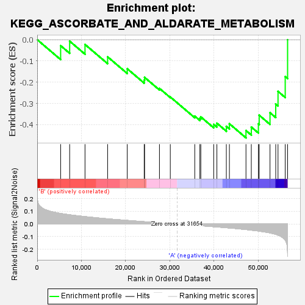

| | | Dataset | my.my.cls#B_versus_A.my.cls#B_versus_A_repos |
| Phenotype | my.cls#B_versus_A_repos |
| Upregulated in class | A |
| GeneSet | KEGG_ASCORBATE_AND_ALDARATE_METABOLISM |
| Enrichment Score (ES) | -0.46174675 |
| Normalized Enrichment Score (NES) | -1.23567 |
| Nominal p-value | 0.23459245 |
| FDR q-value | 0.53745353 |
| FWER p-Value | 0.966 |
Table: GSEA Results Summary

Fig 1: Enrichment plot: KEGG_ASCORBATE_AND_ALDARATE_METABOLISM
Profile of the Running ES Score & Positions of GeneSet Members on the Rank Ordered List
Fig 2: KEGG_ASCORBATE_AND_ALDARATE_METABOLISM
Blue-Pink O' Gram in the Space of the Analyzed GeneSet
Fig 3: KEGG_ASCORBATE_AND_ALDARATE_METABOLISM: Random ES distribution
Gene set null distribution of ES for KEGG_ASCORBATE_AND_ALDARATE_METABOLISM